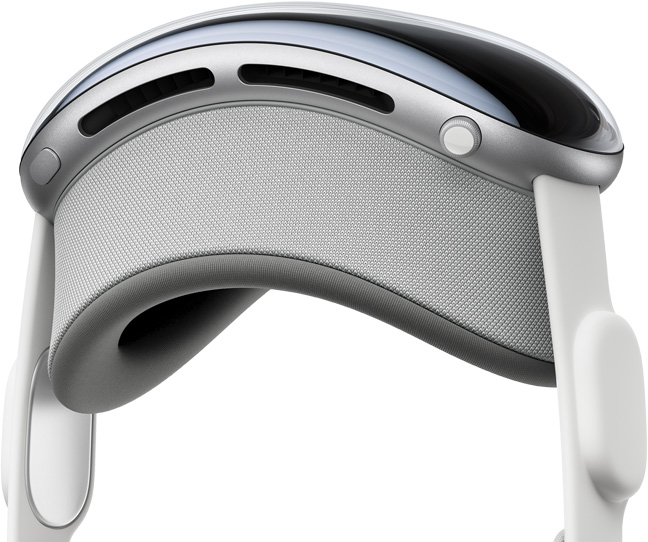

Introduction
Welcome to the era of spatial computing
Apple Vision Pro seamlessly blends
digital content with your physical space.

WATCH THE FILM
WATCH THE EVENT

Productivity
A workspace with infinite space.
Apps
Do what you love. Reimagine how you do it.
A world of apps.
A world of discovery.
Apple Vision Pro expands the experience of your go‑to apps and opens up new possibilities in entertainment, productivity, gaming, and more. Browse the web in Safari, create a to‑do list in Notes, chat in Messages, and seamlessly move between them with a glance. And explore the App Store to discover an ever-expanding collection of awe-inspiring spatial apps designed for Apple Vision Pro.
Design
Designed by Apple.
Apple Vision Pro is the result of decades of experience designing high‑performance, mobile, and wearable devices — culminating in the most ambitious product Apple has ever created. Apple Vision Pro integrates incredibly advanced technology into an elegant, compact form, resulting in an amazing experience every time you put it on.
Front. A singular piece of three-dimensionally formed laminated glass flows into an aluminum alloy frame that curves to wrap around your face.
Light Seal. The Light Seal gently flexes to conform to your face, delivering a precise fit while blocking out stray light.
Head bands. The Solo Knit Band provides cushioning, breathability, and stretch, and a Fit Dial lets you adjust Apple Vision Pro precisely to your head. The Dual Loop Band offers an additional option for a personalized fit.
Power. The external battery supports up to 2 hours of general use and up to 2.5 hours of video playback.1
Sound. Speakers positioned close to your ears deliver rich Spatial Audio while keeping you aware of your surroundings.
EyeSight. An outward display reveals your eyes while wearing Apple Vision Pro, letting others know when you are using apps or fully immersed.
A singular piece of three-dimensionally formed laminated glass acts as an optical surface for the cameras and sensors that view the world. It flows seamlessly into a custom aluminum alloy frame that gently curves to wrap around your face while serving as an attachment point for the Light Seal.
Technology
Innovation you can see, hear, and feel.
Pushing boundaries from the inside out. Spatial experiences on Apple Vision Pro are only possible through groundbreaking Apple technology. Displays the size of a postage stamp that deliver more pixels than a 4K TV to each eye. Incredible advances in Spatial Audio. A revolutionary dual‑chip design featuring custom Apple silicon. A sophisticated array of cameras and sensors. All the elements work together to create an unprecedented experience you have to see to believe.
More pixels than a 4K TV. For each eye.
The custom micro‑OLED display system features 23 million pixels, delivering stunning resolution and colors. And a specially designed three‑element lens creates the feeling of a display that’s everywhere you look.
Our most advanced
Spatial Audio system ever.
Dual-driver audio pods positioned next to each ear deliver personalized sound while letting you hear what’s around you. Audio makes sounds feel like they’re coming from your surroundings. Audio ray tracing analyzes your room’s acoustic properties to adapt and match sound to your space. And if you want to use headphones with Apple Vision Pro, AirPods Pro 2 with USB‑C and AirPods 4 offer the perfect experience — featuring Lossless Audio with ultra-low latency, supported by the H2‑to‑H2 connection across devices.